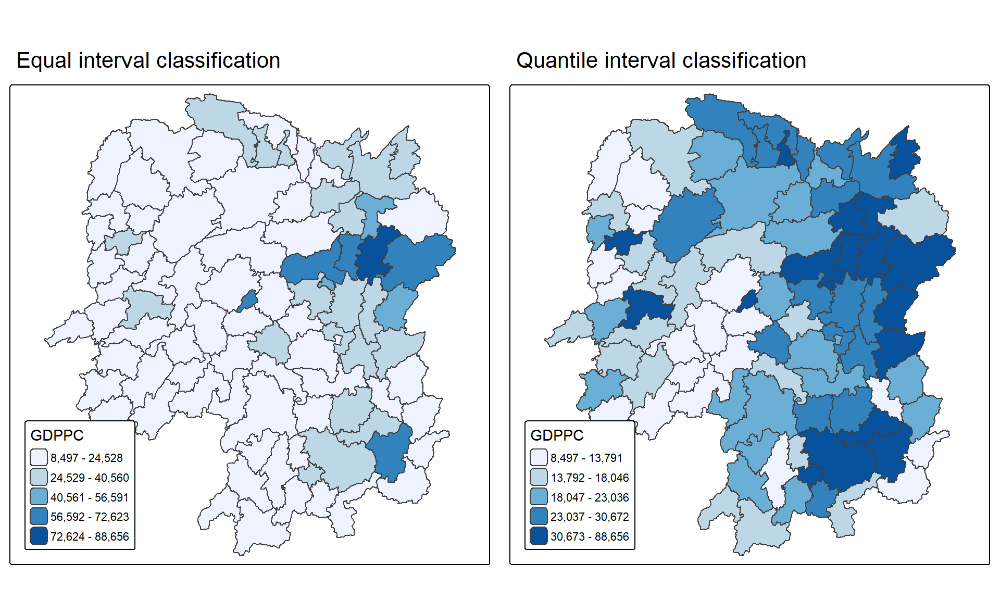
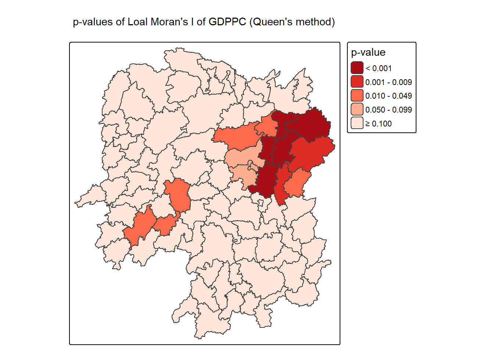
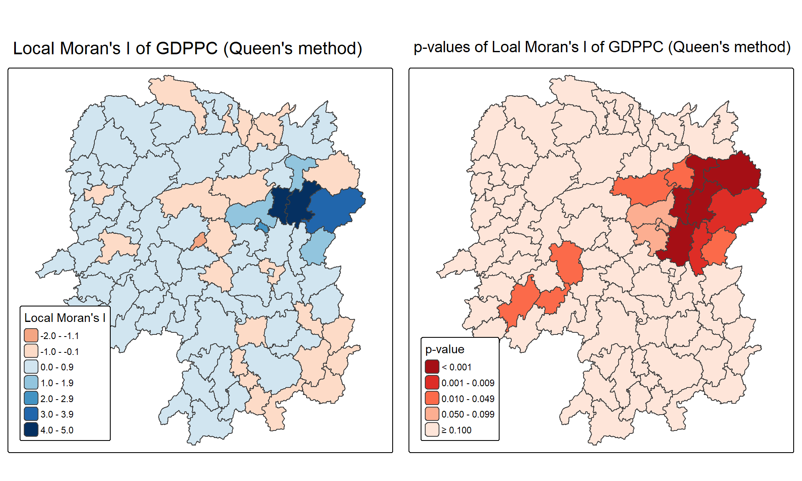
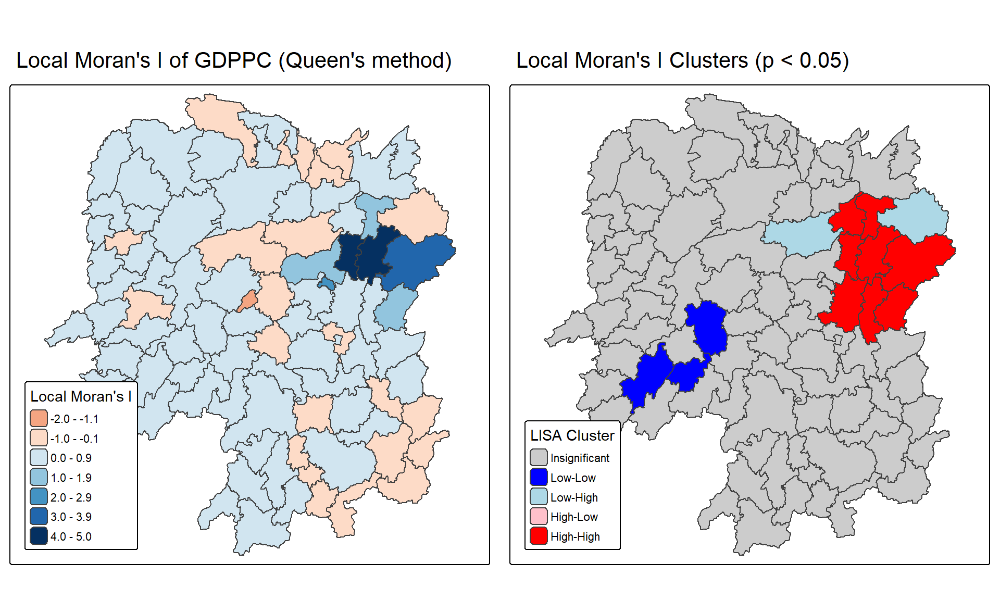
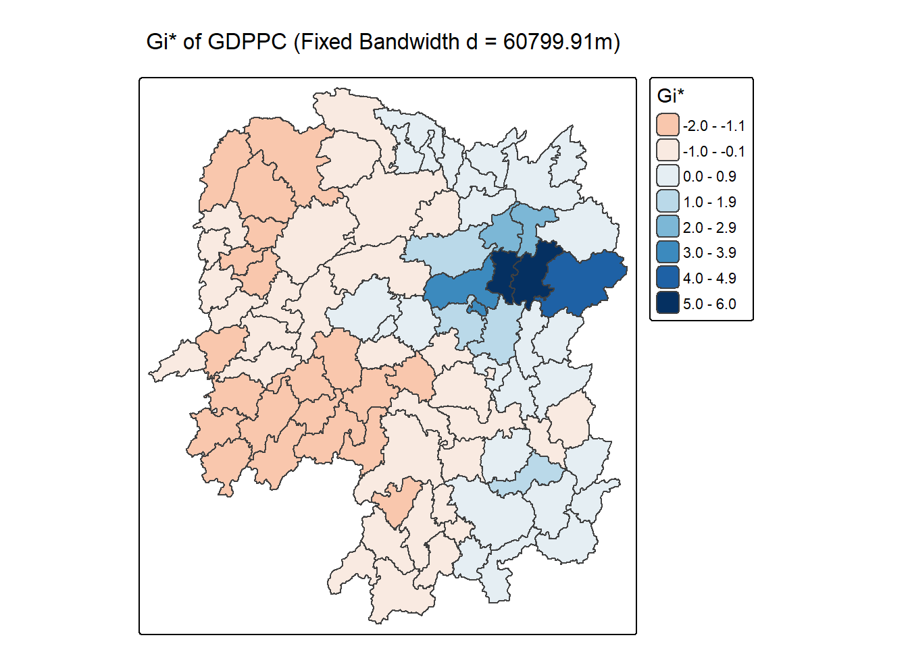
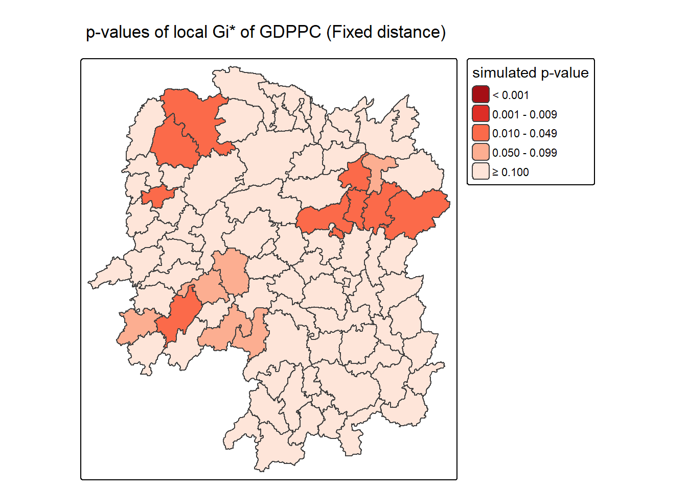
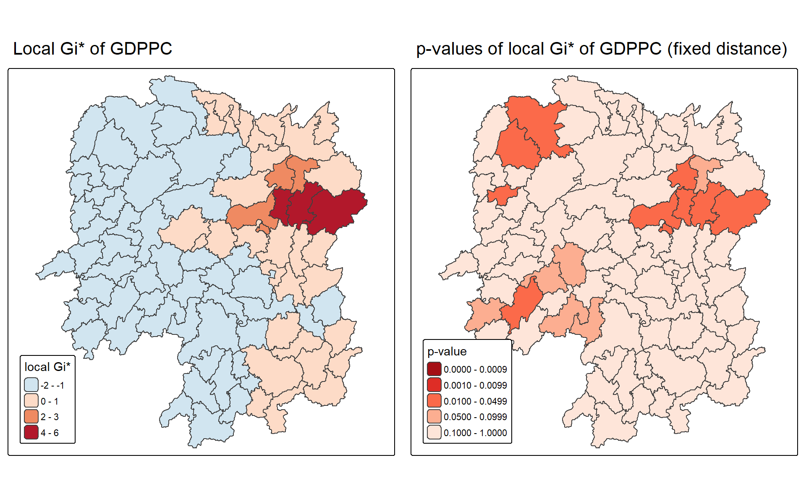

pacman::p_load(sf, sfdep, tmap, tidyverse)05b Local Measures of Spatial Autocorrelation
Local Measures of Spatial Autocorrelation (LMSA) examine the relationships between individual spatial units and their immediate surroundings. Instead of relying on a single summary statistic across an entire geographic region, local measures provide specific scores to uncover underlying spatial structures. Key examples include Local Indicators of Spatial Association (LISA), which mathematically decompose global spatial autocorrelation into local components—and Getis-Ord’s Gi-statistics, both of which provide valuable insights for detecting local spatial clustering in spatial data.
1. Getting Started
In spatial policy, one of the main development objective of the local government and planners is to ensure equal distribution of development in the province. In this case study, we are interested to examine the spatial pattern of a selected development indicator (i.e., GDP per capita) of Hunan Provice, People Republic of China, and to do the following:
- To apply appropriate spatial statistical methods to discover if development are evenly distributed geographically.
- If not, to find out whether there is sign of spatial clustering.
- And if yes, to find out where are these clusters.
The following data sets will be used:
Hunan county boundary layer. This is a geospatial data set in ESRI shapefile format. Hunan_2012.csv: This csv file contains selected Hunan’s local development indicators in 2012.
I will now import the required packages to perform the study.
2. Preparaing the Data
2.1 Importing the Data
I will now import hunan and hunan2012, which are a shapefile and csv respectively.
hunan <- st_read(dsn = "data/geospatial",
layer = "Hunan")%>%
st_transform(crs = 32650)Reading layer `Hunan' from data source
`C:\kayc134\ISSS626_kayc\Hands-on_Ex\Hands-on_Ex05\data\geospatial'
using driver `ESRI Shapefile'
Simple feature collection with 88 features and 7 fields
Geometry type: POLYGON
Dimension: XY
Bounding box: xmin: 108.7831 ymin: 24.6342 xmax: 114.2544 ymax: 30.12812
Geodetic CRS: WGS 84hunan2012 <- read_csv("data/aspatial/Hunan_2012.csv")2.2 Performing Relational Join
hunan <- left_join(hunan, hunan2012) %>%
select(1:4, 7, 15)2.3 Visualising Regional Development Indicator
I will be using tmap functions to:
- Build two choropleth maps by using equal interval (i.e equal) and quantile (i.e. quantile) classification methods, and
- Plot both maps next to each other by using tmap_arrange().
equal <- tm_shape(hunan) +
tm_polygons(fill = "GDPPC",
fill.scale = tm_scale_intervals(
style = "equal",
n = 5,
values = "brewer.blues"),
fill.legend = tm_legend(
title = "GDPPC",
position = tm_pos_in(
"left", "bottom"))) +
tm_borders(fill_alpha = 0.5) +
tm_title("Equal interval classification")
quantile <- tm_shape(hunan) +
tm_polygons(fill = "GDPPC",
fill.scale = tm_scale_intervals(
style = "quantile",
n = 5,
values = "brewer.blues"),
fill.legend = tm_legend(
title = "GDPPC",
position = tm_pos_in(
"left", "bottom"))) +
tm_borders(fill_alpha = 0.5) +
tm_title("Quantile interval classification")
tmap_arrange(equal,
quantile,
asp=1,
ncol=2)
NoteNote
Equal interval classification:
There is a cluster on the dark blue area on the eastern side, with a spot on the lower eastern and center. T
The western to the center is of a lighter shade, indicating that it is dominated by a cold spot.
Quantile interval classification:
The GDPPC is more spread out, where there is a pattern of influence from the eastern towards the center, top and bottom. There is a hot spot at the eastern side represented by the dark blue area.
3. Local Indicators of Spatial Association(LISA)
LISA are local spatial statistics used to evaluate the presence of spatial clusters and outliers in geographically referenced data. When examining spatial attributes such as GDP per capita across Hunan province, local spatial clustering indicates that specific counties exhibit values significantly higher or lower than would be expected under spatial randomness. This section demonstrates how to calculate and interpret LISA statistics, specifically Local Moran’s I to identify spatial clusters and outliers using GDPPC data from Hunan Province.
3.1 Computing Contiguity Spatial Weights
Before we can compute the local spatial autocorrelation statistics, we need to construct a spatial weights of the study area. The spatial weights is used to define the neighbourhood relationships between the geographical units (i.e., county) in the study area.
wm_q <- hunan %>%
mutate(nb = st_contiguity(geometry),
wt = st_weights(
nb, style = "W"),
.before = 1) summary(wm_q$nb)Neighbour list object:
Number of regions: 88
Number of nonzero links: 448
Percentage nonzero weights: 5.785124
Average number of links: 5.090909
Link number distribution:
1 2 3 4 5 6 7 8 9 11
2 2 12 16 24 14 11 4 2 1
2 least connected regions:
30 65 with 1 link
1 most connected region:
85 with 11 links3.2 Row-standardised weights matrix
Next, I will assign weights to each neighboring polygon. In our case, each neighboring polygon will be assigned equal weight using style=“W”. This is accomplished by assigning the fraction 1/(#ofneighbors) to each neighboring county then summing the weighted income values. While this is the most intuitive way to summarise the neighbors’ values, the drawback is that polygons along the edges of the study area will base their lagged values on fewer polygons thus potentially over- or under-estimating the true nature of the spatial autocorrelation in the data. For this example, we will stick with the style=“W” option for simplicity’s sake but note that other more robust options are available, notably style=“B”.
NoteNote
Unlike the workflow in Hands-On Exercise 05a, the row-standardised weights (wt) were already computed inside wm_q when I ran st_weights(nb, style = “W”). Thus, I can directly compute Local Moran’s I using wm_q.
3.3 Computing local Moran’s I
To compute local Moran’s I, the local_moran() function of sfdep will be used. It computes Ii values, given a set of zi values and a listw object providing neighbour weighting information for the polygon associated with the zi values.
I will now compute local Moran’s I of GDPPC2012 at the county level.
set.seed(1234)lisa <- wm_q %>%
mutate(local_moran = local_moran(
GDPPC, nb, wt, nsim = 99),
.before = 1) %>%
unnest(local_moran)local_moran() function returns a matrix of values whose columns are:
Ii: the local Moran’s I statistics E.Ii: the expectation of local moran statistic under the randomisation hypothesis Var.Ii: the variance of local moran statistic under the randomisation hypothesis Z.Ii:the standard deviate of local moran statistic Pr(): the p-value of local moran statistic
glimpse(lisa)Rows: 88
Columns: 21
$ ii <dbl> -1.468468e-03, 2.587817e-02, -1.198765e-02, 1.022468e-03,…
$ eii <dbl> 1.472724e-03, -1.337157e-02, 2.542108e-03, -9.522978e-05,…
$ var_ii <dbl> 5.187992e-04, 1.413972e-02, 1.109689e-01, 4.768012e-06, 1…
$ z_ii <dbl> -0.12912898, 0.33007787, -0.04361717, 0.51186518, 0.33919…
$ p_ii <dbl> 8.972556e-01, 7.413411e-01, 9.652096e-01, 6.087454e-01, 7…
$ p_ii_sim <dbl> 0.80, 0.98, 0.92, 0.56, 0.58, 0.86, 0.06, 0.12, 0.02, 0.2…
$ p_folded_sim <dbl> 0.40, 0.49, 0.46, 0.28, 0.29, 0.43, 0.03, 0.06, 0.01, 0.1…
$ skewness <dbl> -1.0560692, -1.0439328, 0.8429629, 0.8423923, 1.3810032, …
$ kurtosis <dbl> 1.31492710, 0.76654076, 0.12251048, 0.37514702, 2.3883407…
$ mean <fct> Low-High, Low-Low, High-Low, High-High, High-High, High-L…
$ median <fct> High-High, High-High, High-High, High-High, High-High, Hi…
$ pysal <fct> Low-High, Low-Low, High-Low, High-High, High-High, High-L…
$ nb <nb> <2, 3, 4, 57, 85>, <1, 57, 58, 78, 85>, <1, 4, 5, 85>, <1,…
$ wt <list> <0.2, 0.2, 0.2, 0.2, 0.2>, <0.2, 0.2, 0.2, 0.2, 0.2>, <0…
$ NAME_2 <chr> "Changde", "Changde", "Changde", "Changde", "Changde", "C…
$ ID_3 <int> 21098, 21100, 21101, 21102, 21103, 21104, 21109, 21110, 2…
$ NAME_3 <chr> "Anxiang", "Hanshou", "Jinshi", "Li", "Linli", "Shimen", …
$ ENGTYPE_3 <chr> "County", "County", "County City", "County", "County", "C…
$ County <chr> "Anxiang", "Hanshou", "Jinshi", "Li", "Linli", "Shimen", …
$ GDPPC <dbl> 23667, 20981, 34592, 24473, 25554, 27137, 63118, 62202, 7…
$ geometry <POLYGON [m]> POLYGON ((22320.48 3301894,..., POLYGON ((35522.9…3.3.1 Mapping local Moran’s I values
Using choropleth mapping functions of tmap package, I can plot the local Moran’s I values.
tm_shape(lisa) +
tm_polygons(fill = "ii",
fill.scale = tm_scale_intervals(
style = "pretty",
n = 5,
values = "brewer.RdBu"),
fill.legend = tm_legend(
title = "Local Morans'I",
position = tm_pos_out())) +
tm_borders(fill_alpha = 0.5) +
tm_title("Loal Morans'I of GDPPC (Queen's method)")
3.3.2 Mapping local Moran’s I p-values
The choropleth shows there is evidence for both positive and negative I values. However, it is useful to consider the p-values for each of these values.
I will produce a choropleth map of Moran’s I p-values by using functions of tmap package.
tm_shape(lisa) +
tm_polygons(fill = "p_ii",
fill.scale = tm_scale_intervals(
breaks = c(-Inf, 0.001, 0.01, 0.05, 0.1, Inf),
values = "-brewer.Reds"),
fill.legend = tm_legend(
title = "p-value",
position = tm_pos_out())) +
tm_borders(fill_alpha = 0.5) +
tm_title("p-values of Loal Moran's I of GDPPC (Queen's method)")
3.3.3 Mapping both local Moran’s I values and p-values
For effective interpretation, it is better to plot both the local Moran’s I values map and its corresponding p-values map next to each other.
ii.map <- tm_shape(lisa) +
tm_polygons(fill = "ii",
fill.scale = tm_scale_intervals(
style = "pretty",
n = 5,
values = "brewer.RdBu"),
fill.legend = tm_legend(
title = "Local Moran's I",
position = tm_pos_in(
"left", "bottom"))) +
tm_borders(fill_alpha = 0.5) +
tm_title("Local Moran's I of GDPPC (Queen's method)")
p_ii.map <- tm_shape(lisa) +
tm_polygons(fill = "p_ii",
fill.scale = tm_scale_intervals(
breaks = c(-Inf, 0.001, 0.01, 0.05, 0.1, Inf),
values = "-brewer.Reds"),
fill.legend = tm_legend(
title = "p-value",
position = tm_pos_in("left", "bottom")
)) +
tm_borders(fill_alpha = 0.5) +
tm_title("p-values of Loal Moran's I of GDPPC (Queen's method)")
tmap_arrange(ii.map, p_ii.map, asp=1, ncol=2)
3.3.4 Preparing and Visualising LISA Map
Visualising LISA involves generating spatial representations that highlight statistically significant spatial patterns, including spatial clusters (high-high or low-low values) and localised spatial outliers (high-low or low-high values). Standard approaches include choropleth maps displaying local statistics, Moran scatterplots to depict spatial autocorrelation at individual locations, and hot spot analysis maps.A LISA Cluster Map classifies statistically significant locations according to their specific spatial autocorrelation type. Prior to generating this cluster map, a Moran scatterplot is constructed to examine spatial relationships. By plotting a standardized spatial variable on the x-axis against its spatial lag on the y-axis, the scatterplot’s regression slope corresponds to the global Moran’s I. The four resulting quadrants delineate high-high and low-low spatial clusters, as well as high-low and low-high spatial outliers. The spatial lag, which represents the weighted average attribute value of neighboring locations, can be computed using the st_lag() function from the sfdep R package.
lisa <- lisa %>%
mutate(lag_GDPPC = st_lag(
GDPPC, nb, wt),
.before = 1) %>%
unnest(lag_GDPPC)I will now plot the Moran Scatterplot of GDPPC against its spatial lag version
ggplot(data = lisa,
aes(x = GDPPC,
y = lag_GDPPC)) +
geom_point() +
geom_smooth(method = "lm",
se = FALSE,
color = "red") +
labs(x = "GDPPC",
y = "Spatial Lag of GDPPC",
title = "Moran Scatterplot") +
theme_minimal()
The Moran Scatterplot above is not very intuitive and visualisation is required for communication of analysis.
ggplot(data = lisa,
aes(x = GDPPC,
y = lag_GDPPC,
color = mean)) +
geom_point(size = 2) +
geom_smooth(method = "lm",
se = FALSE,
color = "black") +
geom_hline(yintercept=mean(lisa$lag_GDPPC), lty=2) +
geom_vline(xintercept=mean(lisa$GDPPC), lty=2) +
scale_color_manual(
values = c("High-High" = "red",
"Low-Low" = "blue",
"Low-High" = "lightblue",
"High-Low" = "pink")) +
labs(x = "GDPPC",
y = "Spatial Lag of GDPPC",
title = "Moran Scatterplot with LISA Quadrants") +
theme_minimal()
3.3.5 Plotting Moran scatterplot with standardised variable
I will use scale() to center and scale the variable. Centering is done by subtracting the mean (omitting NAs) in the corresponding columns, and scaling is done by dividing the (centered) variable by their standard deviations.
lisa <- lisa %>%
mutate(z_GDPPC = scale(GDPPC),
z_lag_GDPPC = scale(lag_GDPPC),
.before = 1)The as.vector() added to the end is to make sure that the data type we get is a vector, that maps neatly into out dataframe.
I am now ready to plot the Moran scatterplot again.
ggplot(data = lisa,
aes(x = z_GDPPC,
y = z_lag_GDPPC,
color = mean)) +
geom_point(size = 2) +
geom_smooth(method = "lm",
se = FALSE,
color = "black") +
geom_hline(yintercept=mean(lisa$z_lag_GDPPC), lty=2) +
geom_vline(xintercept=mean(lisa$z_GDPPC), lty=2) +
scale_color_manual(
values = c("High-High" = "red",
"Low-Low" = "blue",
"Low-High" = "lightblue",
"High-Low" = "pink")) +
labs(x = "Standardised GDPPC",
y = "Standardised Spatial Lag of GDPPC",
title = "Standardised Moran Scatterplot with LISA Quadrants") +
theme_minimal()
3.3.6 Preparing LISA map classes
I will derive the spatially lagged variable of interest (i.e. GDPPC) and center the spatially lagged variable around its mean. This is follow by centering the local Moran’s around the mean.
Thereafter, I will set a statistical significance level for the local Moran.
signif <- 0.05 3.3.7 Plotting and visualising LISA map
By default, the LISA classes are stored in mean, median and pysal fields of lisa sf data frame. To prepare the LISA map, I will derive a new field called LISA-cluster from either one of these three field and plot the LISA map.
lisa <- lisa %>%
mutate(
LISA_cluster = ifelse(
p_ii < 0.05,
as.character(mean),
"Insignificant"),
LISA_cluster = factor(
LISA_cluster,
levels = c("Insignificant", "Low-Low", "Low-High", "High-Low", "High-High")
)
)lisa_map <- tm_shape(lisa) +
tm_polygons(
fill = "LISA_cluster",
fill.scale = tm_scale_categorical(
values = c(
"grey80", # Insignificant
"blue", # Low-Low
"lightblue", # Low-High
"pink", # High-Low
"red" # High-High
)
),
fill.legend = tm_legend(
title = "LISA Cluster",
position = tm_pos_in("left", "bottom"))
) +
tm_borders() +
tm_title("Local Moran's I Clusters (p < 0.05)")
lisa_map
For effective interpretation, it is better to plot both the local Moran’s I values map and its corresponding p-values map next to each other.
I can also include the local Moran’s I map and p-value map as shown below for easy comparison.
ii.map <- tm_shape(lisa) +
tm_polygons(fill = "ii",
fill.scale = tm_scale_intervals(
style = "pretty",
n = 5,
values = "brewer.RdBu"),
fill.legend = tm_legend(
title = "Local Moran's I",
position = tm_pos_in(
"left", "bottom"))) +
tm_borders(fill_alpha = 0.5) +
tm_title("Local Moran's I of GDPPC (Queen's method)")
lisa_map <- tm_shape(lisa) +
tm_polygons(
fill = "LISA_cluster",
fill.scale = tm_scale_categorical(
values = c(
"grey80", # Insignificant
"blue", # Low-Low
"lightblue", # Low-High
"pink", # High-Low
"red" # High-High
)
),
fill.legend = tm_legend(
title = "LISA Cluster",
position = tm_pos_in("left", "bottom"))
) +
tm_borders() +
tm_title("Local Moran's I Clusters (p < 0.05)")
tmap_arrange(ii.map, lisa_map, asp=1, ncol=2)
4. Hot Spots and Cold Spots Analysis (HCSA)
Hot Spot and Cold Spot Analysis (HCSA) is a spatial statistical technique used to detect statistically significant spatial clusters of high values (hot spots) and low values (cold spots) for a geographically referenced attribute, such as GDPPC. By identifying areas where values are concentrated far more densely than expected under spatial randomness, HCSA provides critical insights into spatial structure. Specifically, a hot spot represents a region where high attribute values are spatially aggregated and surrounded by neighboring locations that also exhibit high values. Conversely, a cold spot denotes an area where low values are clustered among equally low neighboring values. To evaluate whether observed spatial patterns are statistically significant or merely random variations, HCSA utilises local spatial statistics, primarily Getis-Ord’s Gi* statistic. The complete analytical workflow consists of four core steps:
- Deriving a spatial weight matrix.
- Computing Gi* statistics.
- Mapping Gi* statistics.
- Communicating the analysis results.
4.1 Deriving distance weight matrix
While spatial autocorrelation considered units that shared borders, Getis-Ord Gi* statistics uses neighbours defined based on distance.
There are two types of distance-based proximity matrix:
- fixed distance weight matrix,
- adaptive distance weight matrix, and
- inverse distance weights.
4.1.1 Computing fixed distance weights
In this section, I will compute fixed distance weight matrix by using st_dist_band() and st_weights() of sfdep package.
First, we need to determine the upper limit for distance band by using the steps below:
ct <- critical_threshold(st_geometry(hunan))
ct[1] 60799.91The summary report shows that the largest first nearest neighbour distance is 60.80 km. Using this as the upper threshold gives certainty that all units will have at least one neighbour.
Using the critical threshold value computed above, I will compute the fixed distance weight.
hunan_fdw <- hunan %>%
mutate(nb = include_self(
st_dist_band(
st_geometry(geometry),
upper = ct)),
wt = st_weights(nb,
style = "W"),
.before = 1) 4.1.2 Computing adaptive distance weights
One of the characteristics of fixed distance weight matrix is that more densely settled areas (usually the urban areas) tend to have more neighbours and the less densely settled areas (usually the rural counties) tend to have lesser neighbours. Having many neighbours smooth the neighbour relationship across more neighbours.
It is possible to control the numbers of neighbours directly using k-nearest neighbours, either accepting asymmetric neighbours or imposing symmetry.
In this section, I will compute fixed distance weight matrix by using st_dist_band() and st_weights() of sfdep package.
hunan_adw <- hunan %>%
mutate(nb = include_self(
st_knn(
st_geometry(geometry),
k = 6)),
wt = st_weights(
nb, style = "W"),
.before = 1)4.2 Computing local Gi*
Local Gi* is a Getis-Ord statistic used in spatial analysis to identify statistically significant hot spots and cold spots of high or low attribute values within a dataset. It measures the spatial clustering of values by comparing the total value within a specified neighborhood to the global total, producing a Z-score and p-value for each location to determine the likelihood that the observed pattern is not due to random chance.
In this sub-section, I will be performing Gi* analysis by using local_gstar_perm() of sfdep package.
HCSA_fdw <- hunan_fdw %>%
mutate(
gistar = local_gstar_perm(
GDPPC, nb, wt, nsim = 99),
.before = 1) %>%
unnest(gistar)4.3 Preparing and Visualising HCSA Map
4.3.1 Mapping Gi* with fix distance weights
I will be using thematic mapping functions of tmaps to prepare a choropleth map showing the distribution of Gi* values.
tm_shape(HCSA_fdw) +
tm_polygons(fill = "gi_star",
fill.scale = tm_scale_intervals(
style = "pretty",
n = 6,
values = "brewer.rd_bu"),
fill.legend = tm_legend(
title = "Gi*",
position = tm_pos_out())) +
tm_borders(fill_alpha = 0.5) +
tm_title("Gi* of GDPPC (Fixed Bandwidth d = 60799.91m)")
4.3.2 Mapping local Gi* p-values
The choropleth shows there is evidence for both positive and negative I values. However, it is useful to consider the p-values for each of these values.
I will plot a choropleth map of p-values of Gi* by using functions of tmap package.
tm_shape(HCSA_fdw) +
tm_polygons(fill = "p_sim",
fill.scale = tm_scale_intervals(
breaks = c(-Inf, 0.001, 0.01, 0.05, 0.1, Inf),
values = "-brewer.Reds"),
fill.legend = tm_legend(
title = "simulated p-value",
position = tm_pos_out())) +
tm_borders(fill_alpha = 0.5) +
tm_title("p-values of local Gi* of GDPPC (Fixed distance)")
4.3.3 Mapping both Gi* values and p-values
For effective interpretation, it is better to plot both the Gi* values map and its corresponding p-values map next to each other.
Gi_star_map <- tm_shape(HCSA_fdw) +
tm_polygons(fill = "gi_star",
fill.scale = tm_scale_intervals(
style = "pretty",
n = 5,
values = "-brewer.rd_bu"),
fill.legend = tm_legend(
title = "local Gi*",
position = tm_pos_in(
"left", "bottom"))) +
tm_borders(fill_alpha = 0.5) +
tm_title("Local Gi* of GDPPC")
p_values_map <- tm_shape(HCSA_fdw) +
tm_polygons(fill = "p_sim",
fill.scale = tm_scale_intervals(
breaks = c(0, 0.001, 0.01, 0.05, 0.1, 1),
values = "-brewer.reds"),
fill.legend = tm_legend(
title = "p-value",
position = tm_pos_in("left", "bottom")
)) +
tm_borders(fill_alpha = 0.5) +
tm_title("p-values of local Gi* of GDPPC (fixed distance)")
tmap_arrange(Gi_star_map, p_values_map, asp=1, ncol=2)
4.3.4 Plotting and visualising HCSA Map
By default, the HCSA classes are stored in cluster field of HCSA_fdw sf data frame. To prepare the HSCA map, I will derive a new field called HCSA_cluster from cluster field and plot the HCSA map.
HCSA_fdw <- HCSA_fdw %>%
mutate(HCSA_cluster = case_when(
p_sim > 0.05 ~ "Insignificant",
p_sim <= 0.05 & cluster == "High" ~ "Hot spot",
p_sim <= 0.05 & cluster == "Low" ~ "Cold spot",
TRUE ~ "Other"),
HCSA_cluster = factor(
HCSA_cluster,
levels = c("Insignificant", "Hot spot", "Cold spot")
),
.before = 1
)HCSA_map <- tm_shape(HCSA_fdw) +
tm_polygons(
fill = "HCSA_cluster",
fill.scale = tm_scale_categorical(
values = c(
"grey80", # Insignificant
"red", # Low-Low
"blue" # High-High
)
),
fill.legend = tm_legend(
title = "HSCA Cluster",
position = tm_pos_in("left", "bottom"))
) +
tm_borders() +
tm_title("HCSA Clusters (p < 0.05)")
HCSA_map
For effective interpretation, it is better to plot both the local Gi* values map and its corresponding HCSA map next to each other.
tmap_arrange(Gi_star_map, HCSA_map, asp=1, ncol=2)